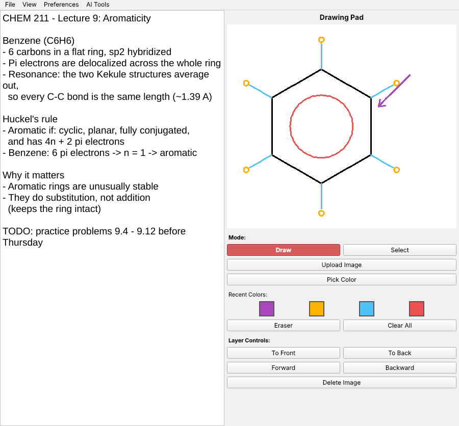

Version 1.1.1
Windows: ZIP Archive • Extract and run SharkPad.exe
Linux: x86_64 AppImage • Mark it executable, then run it
MacOS: ZIP Archive • Choose your chip type • The first time, right-click SharkPad and choose Open
Tested by D. Nourse
All releases and source code
Windows: ZIP Archive • Extract and run SharkPad.exe
Linux: x86_64 AppImage • Mark it executable, then run it
MacOS: ZIP Archive • Choose your chip type • The first time, right-click SharkPad and choose Open
Tested by D. Nourse
All releases and source code
Your All-in-One Productivity Companion
SharkPad is a versatile notepad and drawing environment designed for students, teachers, and anyone looking to organize their work efficiently. Whether you're jotting down notes, managing school assignments, sketching ideas, or planning projects, SharkPad combines text editing, drawing, and AI in a single intuitive interface.
Text Editing
Create, edit, and save notes or documents quickly
Drawing Tools
Sketch diagrams, illustrations, or annotations directly within your workspace
Voice and AI
Dictate while you type and draw, then have the AI Teacher explain your notes with one click
Multi-Purpose
Perfect for school work, teaching materials, brainstorming, or general productivity
See It in Action



Free and Open Source
SharkPad is released under the MIT License. Read the code, report a bug, or build it yourself.